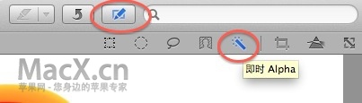
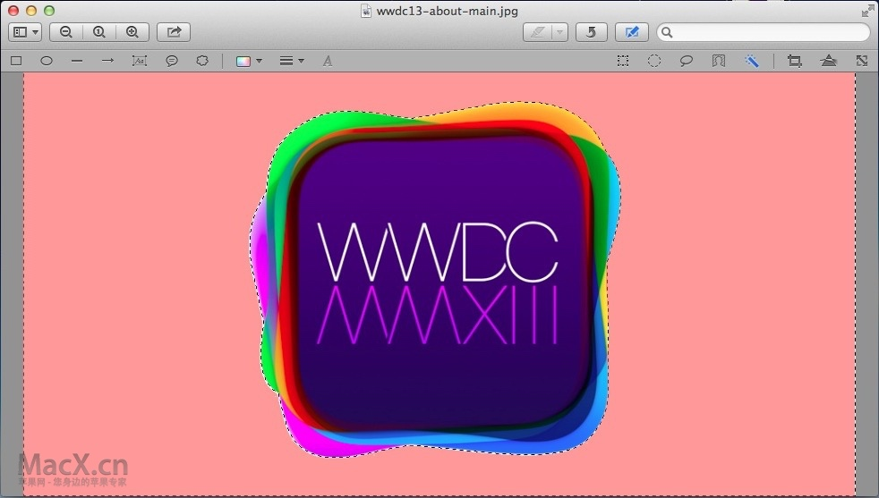
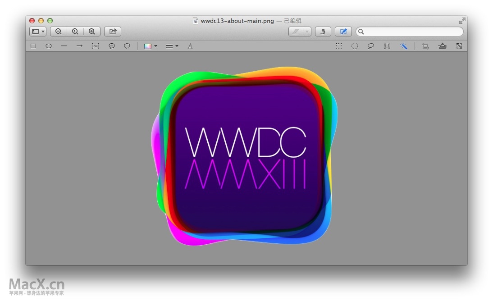
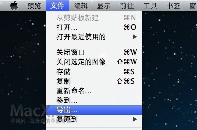
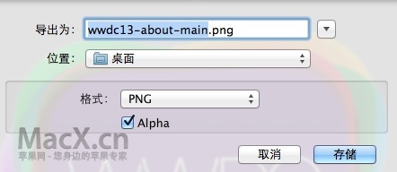

转自：https://www.macx.cn/thread-2093768-1-1.html
现在OS X中自带的【预览】功能十分强大，我们甚至可以通过预览来直接制作一些透明效果的PNG图片，当做图片素材（例如图标）使用。这里要用到的是【预览】中的“即时Alpha”工具。
- 首先我们要使用预览打开你希望制作成为透明背景效果的图片

点击预览上方工具栏的笔状编辑工具，显示编辑工具栏

在出现的编辑工具栏中，找到 "即时Alpha" 这个功能，像一个魔术笔一样的按钮，点一下准备开始编辑（如果没出现在默认列表，那即时Alpha就是在选择工具的下拉菜单中）
这个时候，用鼠标点击一下图片，不要松开，开始进行拖动，上下移动，直到选中图案为止，一般情况下红色区域都会变成透明的；这里涉及到几个细节问题，鼠标光标第一点就是拖动的要慢；另外如果图形复杂不好选中，可以采用反向选择法，就是先+A全选图片，再使用“即时Alpha”拖动空白区域，示例中的WWDC就是这样选中的。其中道理大家可以自行体会实践，简单地说即时Alpha就是一个特殊的选择工具。

- 当把希望成为透明的区域准确选中以后，可以按Delete键，或者+X 剪裁掉不需要的区域，这次剩下的就只有图标了

这样任务就已经基本完成，之后就是导出保存图片，在预览左上方文件下拉菜单中可以找到

-一般我们选择使用图像质量较高的PNG格式来导出透明背景的图案，记得选中Alpha
